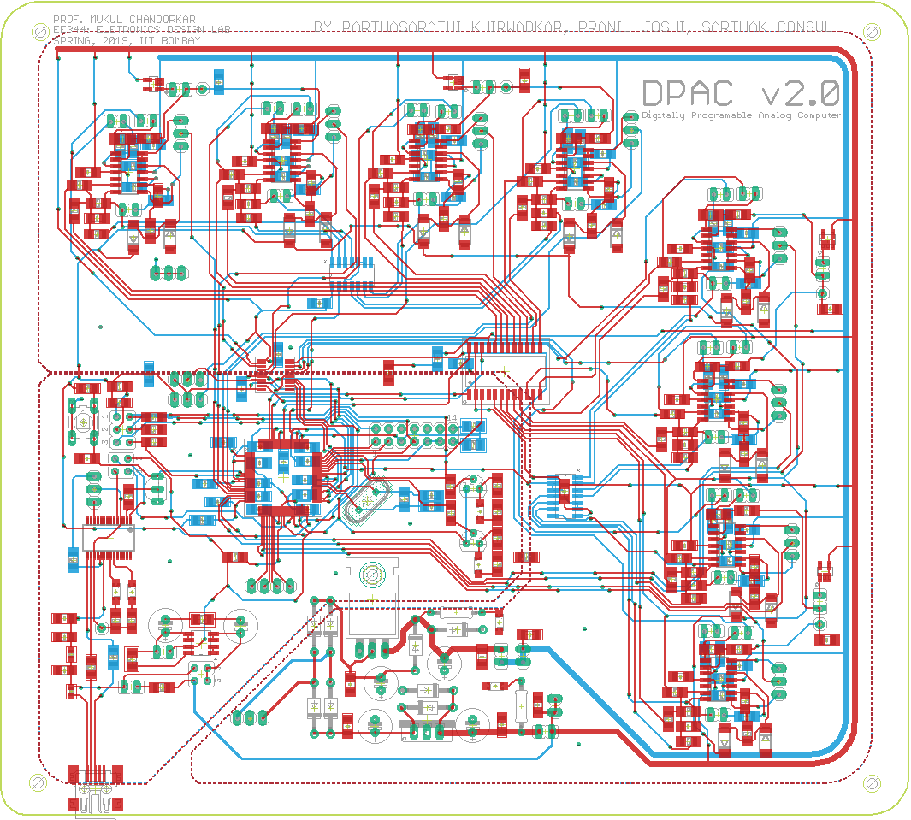
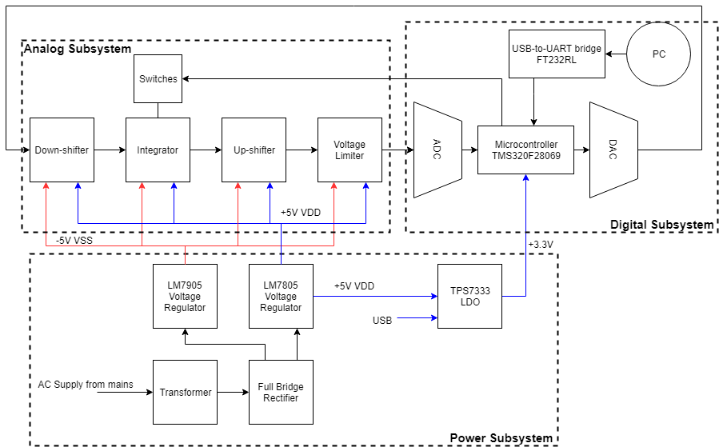

Hardware-in-the-loop simulations are very commonly used to test controller design and monitor how the controller responds, in real time, to realistic virtual stimuli. In an HIL simulation, a real-time computer is used as a virtual representation of the plant model and a real version of the concerned controller. Most of these dynamical systems are in the form of coupled differential equations, and digital computers tend to be terribly slow at iteratively approximating solutions to such systems. The notion of using analog computing grids to efficiently solve differential equations (in hardware) has been well accepted in the research fraternity, and proves to be a faster way to solve non-linear dynamical systems.


The designed board can solve non-linear differentital equations involving 8 stat variables and 3 forcing fucntions. The system works in real-time and requires no human intervention after the initial setup.
It consists of op-amps (TL084), along with passive elements (resistors, capacitors and diodes) to implement integrators, gain blocks, adders, subtractors and voltage limiters to emulate the state space equations. The non-linear functions are computed by the microcontroller (TMS320F28069), which also manages the control logic by regulating the various switches.
The designed board has an in-built power supply system, enabling it to be powered by the 220V, 50Hz mains. The digital subsystem can alternatively be solely powered by the 5V USB connection.
The closed feeback system allows for the speed of the analog integrator be coupled with the non-linearities generated by the digial system achieve a fast hybrid computer.